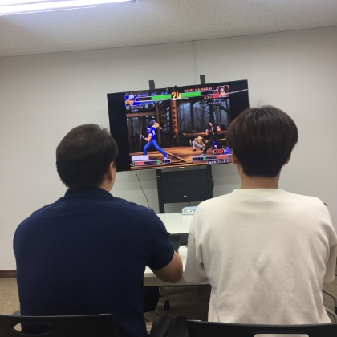
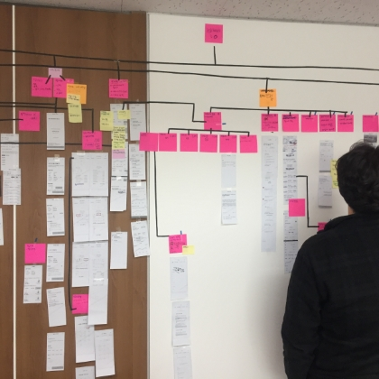
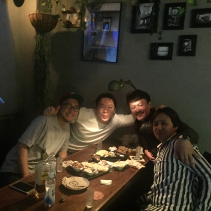
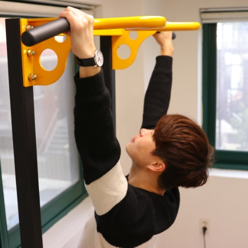

우리의 저녁이 있는 삶을 위해
8시부터 10시 탄력 출근과 하루 7시간 근무로
집중해서 일하고 한시간 일찍 퇴근할 수 있는
엑스티만의 문화를 만들고 있습니다.
Start a project x Download pdf
S
Stable
P
Pleasure
X
XTSIEN
우리는 즐거워서 오래 다니고 싶은 회사를 지향합니다
다양한 우리들이 만나 즐겁고 또 각자가 따로 있어 즐겁고
그렇게 우리는 함께 또 따로 즐거운
엑스티를 만들어 갑니다
다양한 우리들이 만나 즐겁고 또 각자가 따로 있어 즐겁고
그렇게 우리는 함께 또 따로 즐거운
엑스티를 만들어 갑니다

따로
도 같이
도 같이
엑스트
워라벨
워라벨
김현수 대표CEO
송의택 이사CTO
PLANNER
윤성배 팀장
최성민 대리
황수현 사원
우광수 실장
정종운 차창
최홍 사원
성혜연 사원
DESIGNER
PUBLISHER
김정환 차장
신민정 과장
DEVELOVER
홍원기 차장
강인호 과장
김종인 대리
최광일 대리
고세진 대리
정대원 대리
이건희 사원
엑스트지엥
XTSIEN
Life
XTSIEN
Life
우리는 각자의 시공간의 행복을 존중하고,
같은 공간에서 함께 이뤄내기를 기대합니다.
같은 공간에서 함께 이뤄내기를 기대합니다.
서로 다른 개성을 가진 사람들이 함께 모였기에 할 수 있음을 알아갑니다.
어제는 조금 다른 너와 내가 어느덧 함께 시간을 보내
모두 한곳을 바라보는 엑스티지엥 ; XTSIEN이 되어갑니다.
함께 있어 이룰 수 있다고 말하는 우리는 이제 같은 꿈을 꿉니다.
-


-


-


-